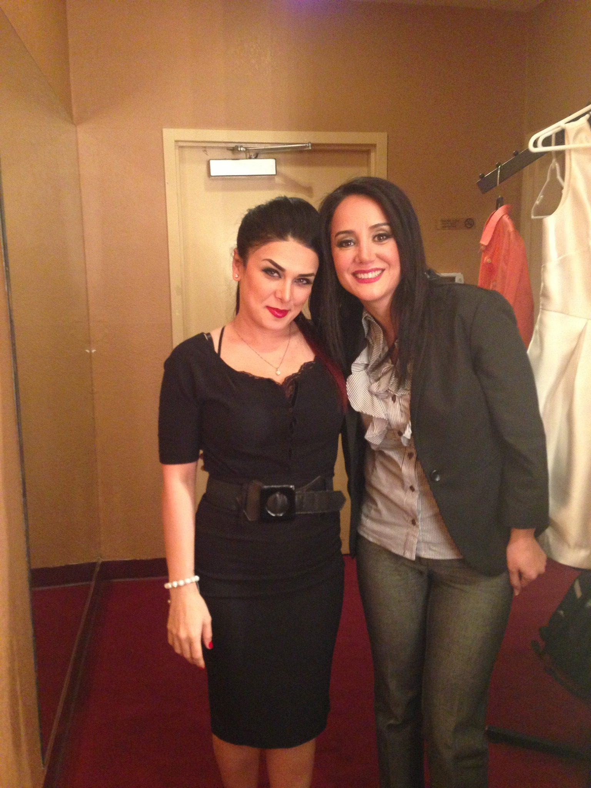
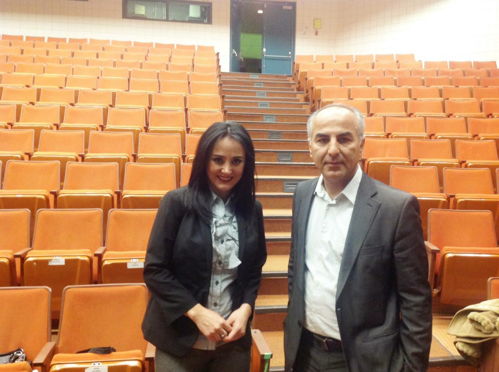
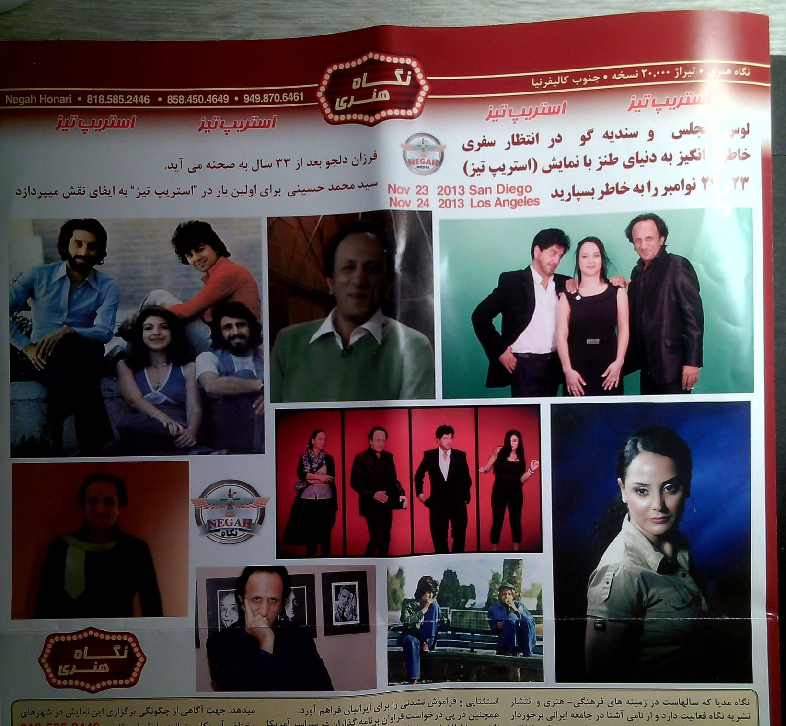

Theatre · California & Canada · 2013
Striptease
A theatrical memory from the early years of a new life in America.
After nearly two decades of professional work in Iranian theatre, cinema, and television, Mina Lakani was beginning a new life in America. Among the unexpected encounters of those early years was an opportunity to work with Farzan Deljou, whose career in Iranian cinema she had known long before arriving in the United States.

Performing in Striptease with Deljou, Mohammad Hosseini, Bahar Khademi, and fellow artists brought genuine excitement. For a brief moment, continuing her acting career in America seemed possible.

As she became more familiar with aspects of the professional environment around her, however, she encountered circumstances that, in her experience, recalled the very system she had chosen to leave behind in Iran.
Distancing herself from that environment became necessary. But necessity did not soften the consequences. The possibility of continuing the work she loved gradually receded, leaving a sadness that could not be resolved simply by believing she had made the right decision.

These few photographs and the original promotional recording remain from a time when that possibility still seemed within reach: a real moment of artistic companionship and excitement, remembered alongside the more complicated years that followed.
مینا لاکانی پس از نزدیک به دو دهه فعالیت حرفهای در تئاتر، سینما و تلویزیون ایران، زندگی تازهای را در آمریکا آغاز میکرد. از دیدارهای غیرمنتظره آن سالها، فرصت همکاری با فرزان دلجو بود؛ هنرمندی که لاکانی سالها پیش از آمدن به آمریکا با فعالیت او در سینمای ایران آشنایی داشت.
حضور در نمایش «استریپ تیز» در کنار فرزان دلجو، محمد حسینی، بهار خادمی و دیگر هنرمندان، شور و اشتیاقی واقعی در او برانگیخت. برای لحظهای کوتاه، ادامه زندگی حرفهای در بازیگری در آمریکا ممکن به نظر میرسید.
اما با شناخت بیشتر برخی از مناسبات محیط حرفهای پیرامون خود، با شرایطی روبهرو شد که از نگاه و تجربه او، یادآور همان ساختاری بودند که آگاهانه تصمیم گرفته بود در ایران از آن فاصله بگیرد.
فاصله گرفتن از آن محیط برای او ضروری شد، اما ضروری بودن این تصمیم، از تلخی پیامدهای آن نمیکاست. امکان ادامه کاری که دوست میداشت، بهتدریج دورتر شد و اندوهی بر جای گذاشت که صرفِ باور به درست بودن تصمیم، نمیتوانست آن را از میان ببرد.
این چند عکس و فیلم تبلیغاتی اصلی، یادگار زمانی هستند که آن امکان هنوز دستیافتنی به نظر میرسید؛ لحظهای واقعی از همراهی و اشتیاق هنری، که اکنون در کنار واقعیت پیچیدهتر سالهای پس از آن به یاد میماند.
The promotional recording
The full original promotional recording, shown here as a smaller viewing copy with the same picture framing and duration.
This preview uses a compressed viewing copy for easier download. The original 112 MB recording is preserved separately and has not been changed.
Shabahang Interviews on VOA Persian
Two archival interviews recorded during the California production of Striptease, presented in their original sequence.


Select either recording to watch on YouTube in a new tab.